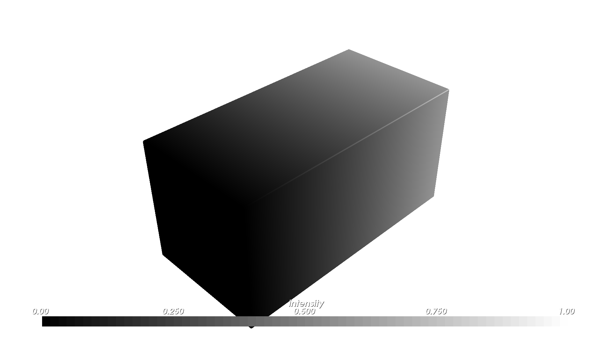
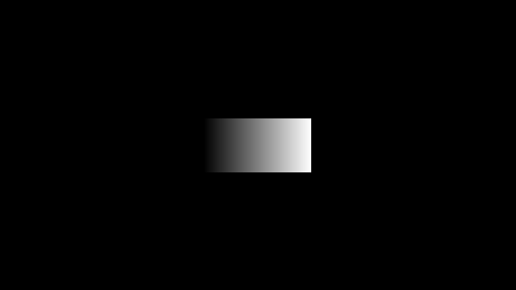

VAT Photo Compiler#
The VatCompiler turns OpenVCAD designs with INTENSITY into a stack of 8-bit grayscale BMP images—one image per build layer. Each pixel stores the local exposure intensity for a vat-photopolymer workflow: 0 is black / no exposure, 255 is white / maximum exposure.
This page is both a tutorial (from a compatible design to BMP slices) and a reference for compiler behavior and Python API.
Prerequisites#
OpenVCAD installed with
pyvcad,pyvcad_compilers, andpyvcad_rendering.Familiarity with scalar attributes on geometry (see Getting Started with OpenVCAD, especially Lesson 4: Attributes, and the Functional Grading Guide).
What this compiler is for#
Use VAT Photo when your machine consumes grayscale layer images instead of meshes or RGBA PNG stacks. This targets vat photopolymer workflows such as masked SLA, LCD, and DLP systems where each XY pixel controls exposure dose or curing intensity for that point in the layer.
The modeled field is INTENSITY, a scalar attribute in [0, 1]. In Python, attach it with pv.FloatAttribute under pv.DefaultAttributes.INTENSITY. In the renderer, INTENSITY defaults to a grayscale palette automatically, so the preview matches the mental model of “darker = less exposure, brighter = more exposure.”
What “BMP stacks” means here#
After compilation you get one BMP file per Z layer:
Width × height is the XY voxel resolution for the compiled domain.
Each image is 8-bit grayscale with values from 0 to 255.
File naming: each slice is written as
file_prefix + z + ".bmp"in the output directory.Empty layers are removed after the run. A layer is considered empty when every inside voxel resolves to zero intensity.
Coordinate note: slice images use an X-axis flip relative to world X, matching the existing image-stack compilers.
Pipeline overview#
The compiler samples the model on a voxel grid, reads INTENSITY at each inside voxel, clamps the value into [0, 1], converts it to a grayscale byte with round(intensity * 255), writes one BMP per layer, and trims empty layers at the beginning and end of the stack.
Zero intensity and empty layers#
Unlike the material and color inkjet compilers, INTENSITY == 0 is treated as unexposed / empty instead of “active but assigned a fallback material.” This means a fully black region contributes no active voxels to the layer, and a fully black layer can be trimmed away entirely.
Two domain modes#
The VatCompiler supports two constructor shapes:
1. Printer-volume mode#
VatCompiler(root, voxel_size, printer_volume, output_directory, file_prefix)
Use this when your machine expects a fixed XY canvas tied to a known panel or build area. The compiler:
computes X and Y resolution from
printer_volume / voxel_sizekeeps Z sampling aligned to the model height
centers the model in XY within the printer volume
raises
RuntimeErrorif the model exceeds the configured printer volume
2. Bounding-box mode#
VatCompiler(root, voxel_size, output_directory, file_prefix)
Use this when you want the output stack to hug the model’s bounding box instead of a fixed machine canvas. The resulting BMPs are usually smaller and easier to inspect, but they do not preserve the machine’s full XY panel layout. You will need to separately composite the image inside of a printer volume image.
Missing INTENSITY inside the solid#
This is where the Getting Started guide matters directly:
Lesson 4: Attributes covers how scalar fields are attached to geometry in the first place.
Lesson 7: The Node Hierarchy and Attribute Priority explains why a union can contain regions where one child defines an attribute and another child does not.
For VatCompiler, undefined intensity is handled per voxel, not by an up-front root validation step:
Default: undefined inside voxels use fallback intensity
1.0, so they export as white / full exposure.set_fallback_intensity(value)lets you override that fallback with any value in[0, 1].set_strict_mode(True)raisesRuntimeErroron the first inside voxel missingINTENSITY, including the world-space position in the message.
Tutorial: design to BMP slices#
The main scripts for this walkthrough live under examples/compilers/vat/.
1. Build geometry with INTENSITY#
Use pv.FloatAttribute with pv.DefaultAttributes.INTENSITY. This is the same scalar-attribute workflow introduced in Lesson 4: Attributes, just targeting a printer-facing compiler instead of a preview-only field.
2. Choose voxel_size and, optionally, printer_volume#
voxel_size is a Vec3 in millimeters. This usually is derived from your machine config.
In printer-volume mode, choose a printer_volume that matches the machine’s physical panel or intended job area. In bounding-box mode, omit printer_volume and let the output crop tightly around the model.
3. Run the compiler in printer-volume mode#
The example below matches examples/compilers/vat/01_basic_bmp_stack.py:
import os
import shutil
import pyvcad as pv
import pyvcad_compilers as pvc
import pyvcad_rendering as viz
cube = pv.RectPrism(pv.Vec3(0, 0, 0), pv.Vec3(20, 10, 10))
# High exposure on the left, low exposure on the right so the exported
# bitmaps show a visible grayscale ramp after the X-axis image flip.
intensity_gradient = pv.FloatAttribute("-x/20 + 0.5")
cube.set_attribute(pv.DefaultAttributes.INTENSITY, intensity_gradient)
root = cube
voxel_size = pv.Vec3(0.15, 0.15, 0.15)
printer_volume = pv.Vec3(96.0, 54.0, 100.0)
output_dir = os.path.join(os.path.dirname(__file__), "output")
prefix = "slice_"
if os.path.isdir(output_dir):
shutil.rmtree(output_dir)
os.makedirs(output_dir, exist_ok=True)
compiler = pvc.VatCompiler(root, voxel_size, printer_volume, output_dir, prefix)
def on_progress(p):
print("compile progress: {:.1f}%".format(100.0 * p))
compiler.set_progress_callback(on_progress)
compiler.compile()
print("resolution (x, y, z bmp count):", compiler.resolution())
viz.Render(root)
From the repository root, with the project virtual environment activated: python examples/compilers/vat/01_basic_bmp_stack.py compiles then opens the interactive preview. The renderer will show INTENSITY in grayscale by default.
4. Bounding-box mode#
If you want a tightly cropped stack instead of a fixed printer canvas, use the bounding-box constructor:
compiler = pvc.VatCompiler(root, voxel_size, output_dir, prefix)
The companion script examples/compilers/vat/02_bbox_bmp_stack.py uses the same prism and gradient as the printer-volume example, so you can compare the slice layout directly.
5. Undefined intensity and fallback behavior#
The companion example examples/attributes_by_type/undefined/vat_example.py builds two overlapping cubes where only one branch defines INTENSITY. In default mode, the undefined region is exported with fallback intensity 1.0, so it appears white in the output slice:
left_cube = pv.RectPrism(pv.Vec3(-5, 0, 0), pv.Vec3(10, 10, 10))
right_cube = pv.RectPrism(pv.Vec3(5, 0, 0), pv.Vec3(10, 10, 10))
left_cube.set_attribute(pv.DefaultAttributes.INTENSITY, pv.FloatAttribute(0.25))
root = pv.Union(left_cube, right_cube)
compiler = pvc.VatCompiler(root, voxel_size, default_output_dir, "slice_")
compiler.compile()
That example also shows set_fallback_intensity(...) and strict mode in the same script.
Reference: Python API#
Constructors#
Constructor |
Meaning |
|---|---|
|
Compile only the model bounding box. |
|
Compile onto a fixed printer-volume XY canvas with centered XY placement. |
Methods (including CompilerBase)#
Method |
Role |
|---|---|
|
Run the full pipeline. |
|
Reports the compiler’s consumed field name ( |
|
Request cooperative cancellation. |
|
|
|
|
|
Require |
|
Fallback intensity for undefined inside voxels when strict mode is off. |
For full autodoc signatures, see the pyvcad_compilers section (VatCompiler and CompilerBase).
Figures#
Design preview (same prism and gradient as the tutorial; the renderer uses the default grayscale palette for INTENSITY):
INTENSITY (preview)

Example slices from the compiled BMP stacks. The printer-volume version preserves the full machine canvas; the bounding-box version crops tightly around the model:
Slice — printer-volume mode

Slice — bounding-box mode
Fallback behavior when a branch of the design has geometry but no INTENSITY. In default mode, the missing region compiles as full exposure (white) because the fallback intensity is 1.0:
Slice — undefined region uses fallback intensity 1.0
Limitations#
The output is 8-bit grayscale BMP only in this workflow.
The compiler assumes
INTENSITYis meaningful in[0, 1]and clamps values outside that range.INTENSITY == 0is treated as empty exposure, so fully black layers are trimmed away.Printer-volume mode centers only in XY; Z still follows the model height.
Further examples#
examples/compilers/vat/01_basic_bmp_stack.py— printer-volume workflow (this guide).examples/compilers/vat/02_bbox_bmp_stack.py— same scene compiled in bounding-box mode.examples/attributes_by_type/undefined/vat_example.py— fallback intensity and strict mode whenINTENSITYis missing on part of a union.